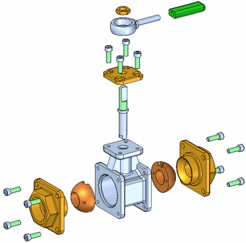
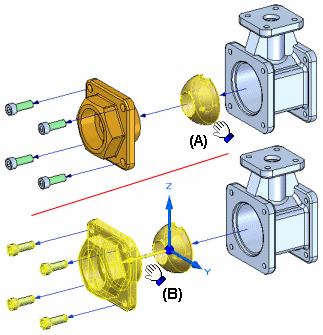
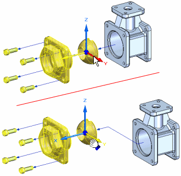
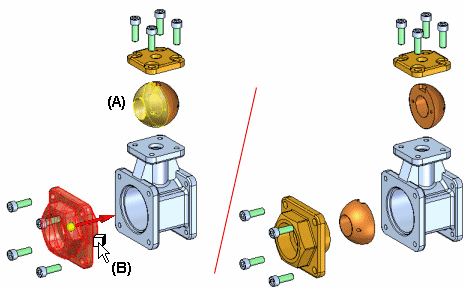
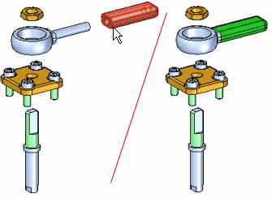
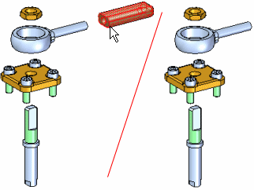
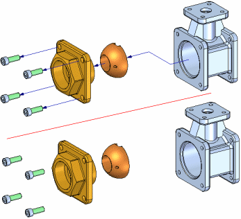
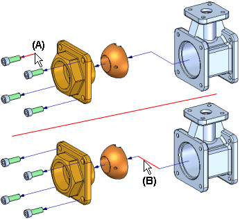
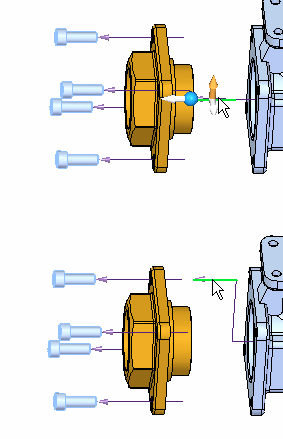
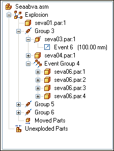

Creating exploded views of assemblies
Solid Edge enables you to easily create exploded views of your assemblies. You can use the exploded views you define in the Assembly environment to create exploded assembly drawings in the Draft environment. You can also create presentation-quality renderings and animations of exploded assemblies.

To access the commands for creating assembly explosions, in the Assembly environment click the Tools tab, then ERA. A set of commands specifically tailored for working with explosions, renderings, and animations is displayed. You can use the menu commands and the Explode PathFinder tab shortcut menu to create, view, and edit exploded views of an assembly.
The operations you perform while creating an exploded view are captured as events and displayed in the Explode PathFinder tab on PathFinder. You can edit these events later.
When you have finished defining an exploded view, you can save the exploded view display configuration to a name you define.
Exploding assemblies automatically
Many assemblies can be quickly exploded using the Auto-Explode command (also referred to as the Automatic Explode command). You can use this command to explode all the parts in an assembly; or to explode only the parts in subassemblies you select.
When you explode selected subassemblies, you can select the subassemblies in the graphics window or in PathFinder.
The Automatic Explode command explodes assemblies based on the relationships applied between parts. In assemblies where the parts are positioned using mate or axial align relationships, this command will quickly give you excellent results.
The Automatic Explode command cannot explode parts that are grounded. For example, when you create a new part within the context of the assembly using the Create In-Place option, the part is positioned using a ground relationship. You can use the Explode command to manually explode a grounded part, or you can delete the ground relationship, then position the part using assembly relationships, such as mate and align.
Exploding assemblies manually
The Explode command gives you more control over assembly explosions than the Automatic Explode command. You should use Explode for assemblies where many of the parts were positioned without using mate or axial align relationships, or when you want to explode the parts in a different direction than the Automatic Explode command uses.
The Explode command allows you to define an explode direction for one or more selected parts. You can select the parts in the graphic window or PathFinder.
When exploding parts manually, you first define the parts you want to explode, then select a base part and a face on the base part to define the explode direction.
You can also use the Explode command to edit explosions created with the Automatic Explode command.
Exploding subassemblies
If you want all the parts in a subassembly to remain a single unit (no offset distance is applied between the parts), there are two approaches you can use. If you want all the subassemblies in the assembly to remain a single unit, you can set the Bind All Subassemblies option available with the Automatic Explode command.
If you only want some of the subassemblies in the assembly to remain a single unit, you can use the Bind Subassembly command on the Home tab to specify that a selected subassembly remains a single unit. A symbol is added to PathFinder to indicate the subassembly is bound.
If you want to explode the subassembly later, you can use the Unbind Subassembly command to unbind the subassembly.
Modifying an exploded assembly
You can use the other commands to modify the position and display of parts in your explosions.
-
Moving and offsetting parts
The Move Exploded Part command allows you to move or rotate one or more parts along the original explode vector, or along another vector you define. You can use the buttons on the command bar to move only the parts you select (A), or the selected part and its dependent parts (B).

Note:The Move Exploded Part command cannot reorder parts in an exploded view by moving a part past any adjacent parts.
When you select a part to move, an orientation triad is displayed with the original explode vector axis highlighted. To offset the parts in a new direction, select one of the other axes, or use the options on the command bar to reorient the triad to define the vector you want.

When you offset the part in a new direction, a joggle is added to the part and a new explode event is added to the Explode PathFinder tab.
-
Repositioning parts
The Reposition command allows you to change the order of a part in an exploded view. To reposition a part, select the part you want to reposition (A), then highlight a reference part (B) in the explosion. An arrow is displayed to indicate where the part will be repositioned. If that is not the correct position, highlight a different reference part. You can reposition a part by placing it into a new position in its original explode vector or into the explode vector of another group of parts.

When you reposition a part, the spacing of adjacent parts is adjusted. You can also reposition all the parts in a bound subassembly.
-
Collapsing parts
The Collapse command allows you to quickly return a part to its original assembly position relative to its parent part, but still show it in the exploded view.

-
Removing parts
The Remove command allows you to hide a part in the exploded view. When you remove a part, it is returned to its original, unexploded assembly position. You can re-display it using PathFinder.

Flow lines
Flow lines are used between the parts in an exploded view to represent how the parts are related to one another. You control the display of flow lines and flow line terminators in an exploded view using the Flow Lines and Flow Line Terminators commands on the Home tab.
There are two types of flow lines, event flow lines and annotation flow lines. Event flow lines and annotation flow lines. Event flow lines are created using the explode commands and show the path the assembly components follow during an explode event in an animation.
Annotation flow lines are used to create exploded views for draft documents. The Event flow lines can be dropped, which converts them into annotation flow lines, and creates an individual entry in the explode PathFinder for each flow line. Annotation flow lines can be added or modified to create the desired exploded view.
After you complete placing annotation flow lines on an exploded view, you must save a display configuration to place the exploded view on a drawing sheet.

-
Editing event flow lines
You can edit the length of an end segment of a flow line (A), or the position of a joggle segment (B) of a flow line using the Modify command, or by using the drag component command.

-
Editing annotation flow lines
Annotation flow lines can also be edited with the Modify command. Annotation flow lines can be modified by dragging the handles and using key points on destination geometry to determine the length of the flow line.

-
Displaying and hiding individual flow lines
You can also display or hide the flow line between two parts using the explode PathFinder to show or hide the flow lines. The flow line command will turn on or off the display of flow lines. The flow line terminator command will turn on or off the display of the arrowheads at the end of each flow line.
Note:You can only select individual flow lines in the graphic window with the Edit Flow Lines command or in the Explode PathFinder tab with the Select command.
-
Deleting flow line segments
For event flow lines, you cannot delete the first or last segments of a flow line, but you can delete the joggle segment of a flow line using the Explode PathFinder tab. For annotation flow lines, you can delete segments or complete flow lines using the modify command.
Explode PathFinder tab
The Explode PathFinder tab on PathFinder displays the structure for the current exploded view configuration in a hierarchical list. As discussed previously, the operations you perform while creating an exploded view are captured as events and displayed.

You can use the Explode PathFinder tab to review and modify explode operations. For example, you can move an explode Group to another position in the explode structure, add and remove parts from Event Groups, edit the linear or rotational offset values of an explode event and so forth.
Editing explosion offset distance and angle
You can use the Select command to edit the offset distance or rotation angle for one or more explode events. You can select a single event in the Explode PathFinder tab, or multiple events by selecting one or more parts in the graphic window.
-
Editing single events
When you select an explode event entry in the Explode PathFinder tab, the current offset distance or rotational angle is displayed on the command bar. You can type a new value to change the distance or angle.
-
Editing multiple events for a single part
When a single part has multiple linear offset events, such as for a part with a joggled flow line, you can change all the linear distance values to a common value in one operation. Select the part in the graphics window, then type a value in the Distance box on the command bar. The Distance box on the command bar will be blank the first time you do this. Only linear distance events are recognized.
-
Editing multiple events for multiple parts
You can also define a common linear offset value for multiple parts in one operation. Drag a box around the parts with the Select command, and then type a value in the Distance box. Again, only linear distance events are recognized.
Saving exploded display configurations
You can use the Display Configurations command on the Home tab to save the display configuration of an exploded view so you can recall it later. When you save an exploded view configuration, the set of explode operations used to create the exploded view is captured and saved. When you activate an exploded view configuration, the Explode PathFinder tab updates to list the captured operations for the current configuration.
You can also use exploded display configurations when creating drawings and technical documents of exploded assemblies, and when creating animations of exploded assemblies using the Animation Editor command on the Home tab.
Creating multiple exploded views
If you need to create several drawings or animations of the same assembly, but with different parts displayed or the parts displayed in different positions, you can save additional exploded display configurations. After you have saved an exploded display configuration, you can use the Unexplode command on the Edit menu to reassemble the parts so you can start a new exploded view.
Using assembly display configurations
You can use display configurations of regular assembly windows to control the display status of parts in an exploded view. For example, when you apply an assembly display configuration which has a hidden subassembly, the subassembly is also hidden in the exploded view. The exploded positions of the parts are not changed.
Animating exploded views
You can use the Animation Editor command to create an animation of an exploded view. The Animation Editor tool has options that allow you to specify the explode configuration, initial state, speed, and animation order. For more information, see the Creating assembly animations Help topic.
Creating drawings of exploded views
When creating a drawing of an assembly in the Draft environment, you can specify an exploded view configuration name on the Drawing View Wizard to create a drawing view of an assembly explosion. You can also use the Drawing of Active Model command on the File menu→New tab to create a drawing of an assembly explosion.
The Drawing of Active Model command is not available when working in the Explode-Render-Animate application.
Flow lines in exploded assembly drawings
When you create drawings of assembly explosions, the flow lines are automatically displayed in the drawing views. You can specify whether flow lines are displayed in a drawing view using the Annotation tab on the Drawing View Properties dialog box. You can also modify the display of the flow lines using the Draw in View command on the shortcut menu.
How do I
Explode an assembly automaticallyExplode individual parts in an assembly
Reposition a Part in an Exploded Assembly
Remove a part from an exploded assembly
Collapse a part in an exploded assembly
Drag an exploded part in an assembly
Unexplode an Assembly
Keep a subassembly intact when exploding
Unbind a subassembly
Drop flow lines
Display or Hide Flow Lines in an Exploded Assembly
Add Events to or Remove Events from an Event Group
Look up more details
Auto-Explode commandAutomatic Explode command bar
Automatic Explode Options dialog box
Explode command
Explode command bar
Manual Explode Options dialog box
Explode PathFinder tab
Explosion Properties dialog box
Reposition command
Reposition command bar
Remove command (Explode application)
Collapse command
Drag Component command
Drag Component command bar
Unexplode command
Bind Subassembly command
Unbind Subassembly command
Draw command (flow lines)
Draw command bar
Modify command
Modify command bar
Flow Lines command
Flow Line Terminators command
Show Flow Lines Command
Hide Flow Lines Command
Remove Event from Group Command
Add Event to Group Command
Display Configuration Options dialog box